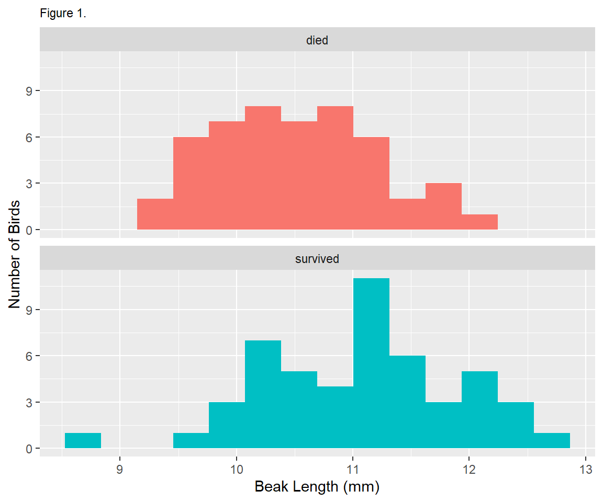
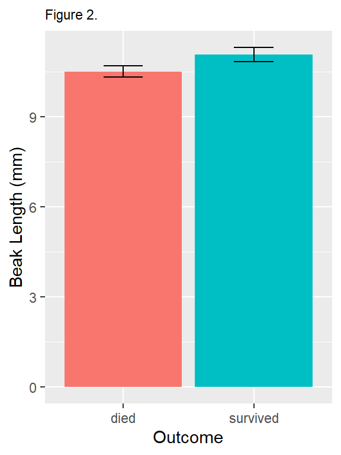

3. Finch Data Example
In Part 3 of this lab, you will be introduced to scripts, graphing, and analysis in R. You will use the Finches dataset to learn how to read a tabular dataset into R, inspect it, and perform basic statistical summaries on it. You will estimate means, standard deviations, standard errors of the mean, and confidence intervals around the mean. You will also learn how to plot histograms and bar charts (also called column charts).
Introduction
In the finch dataset, each row represents an individual bird that was banded before the 1977 drought on Daphne Major island in the Galapagos archipelago. The variable named outcome contains one of two values: “survived” or “died”, depending on whether the bird was ever seen after the drought or not.
The question you are tasked with answering for Part 3 is:
Did beak length vary between birds that survived the drough and those that did not?
The following sections will guide you through the process of answering this question using the data provided.
Download the data
Download the data and save it in the project directory (folder) you created earlier. For example, if you created your project in the Documents folder and named it Org Bio Data Lab 1 then save the data into the Org Bio Data Lab 1 folder.
You will know you saved it to the correct location if the Excel file shows up in the Files pane in RStudio next to your R Project file.
If you want to look at the data, you can open the file in Excel.
R scripts
Create a script
So far you have been running commands by typing them into the console. One of the benefits of R over programs such as Excel, for example, is the ability to save your commands in the form of written. Enter the script! A script is simply a text file containing commands for R to execute.
To create a script, click File > New File > R Script or click the New File button on the toolbar. A new pane will open above your Console pane. This is called the script pane.
It is always a good idea to save it right away, just in case RStudio crashes or you spill Orange Fanta all over the computer (which is a completely hypothetical example and has never happened before. Really!).
Go to File > Save or click the floppy disk icon on the Source pane toolbar (not the global toolbar). When prompted for a file name, use “finch”. RStudio will automatically add the “.R” file extension, so when your new scrip appears in the Files pane it will say “finch.R”.
Run code from a script
Now that you have a script, try typing some code in it. For example:
To run the code, place your cursor on the same line as the code as click Run on the Source pane toolbar, then Run Selected Lines. Or just hold down the command button and press the enter key. This is called a keyboard shortcut, and is written as Cmd+Enter.
When you run the line of code, RStudio copies it to the Console pane and executes it.
Tip From now on, run code from a script rather than the console.
Pro Tip Copy code directly from the tutorial and paste it into your R script, comments and all. It saves time and you’re less likely to make a typo.
R packages
In R, users share code with each other in the form of packages, each of which is a bundle of code, data, and other files. While R includes some basic functionality in it’s “base” packages, you often need to work with other packages when doing any data analysis.
In this tutorial you will use a group of packages collectively referred to as the tidyverse. You don’t need to know their names, but they include the dplyr, ggplot, and readxl packages, among many others.
Before you can use a package, you to download and install it. Click the Package tab in the botom right pane and click Install. Type the name of the package, tidyverse, and click Install. This will install the tidyverse package and all those others mentione above.
You only have to install a package once on each computer you are using. If you open RStudio again later, every package you’ve ever installed wil still be there.
Read the data into R
Now that you have a script and have downloaded your packages, you’re ready to get coding!
The first lines in any script are usually for loading the packages into memory. Copy these two lines (including the comments if you want) and paste them into your script.
library(readxl) # load readxl, for reading Excel files
library(tidyverse) # load tidyverse, for working with datasets## Warning: package 'tidyverse' was built under R version 3.5.1## -- Attaching packages --------------## v ggplot2 2.2.1.9000 v purrr 0.2.5
## v tibble 1.4.2 v dplyr 0.7.5
## v tidyr 0.8.1 v stringr 1.3.1
## v readr 1.1.1 v forcats 0.3.0## -- Conflicts -----------------------
## x dplyr::filter() masks stats::filter()
## x dplyr::lag() masks stats::lag()Put your cursor on the first line and type Cmd+Enter to run it. The cursor automatically moves to the next line, so you can type Cmd+Enter again to run the next line.
You will see a warning and some messages in the Console tab, but those can be safely ignored.
To read the data, you will use a function named read_excel(). Here we run that function and assign the results to an object names finches.
Warning If you haven’t saved your data file in the right place, or if you are not working with your RStudio project open, you may get an error message in the console. If you can’t figure out how to solve the problem yourself, ask your instructor for help.
To get a quick look at the data, print the finches object to the console:
## # A tibble: 100 x 12
## band species sex first_adult_year last_year outcome weight wing
## <dbl> <chr> <chr> <dbl> <dbl> <chr> <dbl> <dbl>
## 1 9 Geospiza f~ unkn~ 1975 1977 died 14.5 67
## 2 12 Geospiza f~ fema~ 1975 1977 died 13.5 66
## 3 276 Geospiza f~ unkn~ 1976 1977 died 16.4 64.2
## 4 278 Geospiza f~ unkn~ 1976 1977 died 18.5 67.2
## 5 283 Geospiza f~ male 1976 1977 died 17.4 70.2
## 6 288 Geospiza f~ unkn~ 1976 1977 died 16.3 71.2
## 7 293 Geospiza f~ unkn~ 1976 1977 died 15.7 67.2
## 8 294 Geospiza f~ unkn~ 1976 1977 died 16.8 68.2
## 9 298 Geospiza f~ male 1976 1977 died 15.5 68.2
## 10 307 Geospiza f~ male 1975 1977 died 17.5 70
## # ... with 90 more rows, and 4 more variables: tarsus <dbl>,
## # beak_length <dbl>, beak_depth <dbl>, beak_width <dbl>The first thing you notice is that this object is not a vector like the objects you were working with before. Instead, it’s a tibble, which is an object that stores tabular data.
The first line of the output gives the data type (tibble) and dimensions of the data (number of rows x number of columns). In the tidyverse, columns are referred to as “variables”.
The first 10 rows are shown, as well as the first few variables. How many variables depends on how wide your Console window is.
For each variable, it’s name is given, followed by the type of data. Most of the time we worth with either numeric data (<dbl>) or text data (<chr>).
If there are more than 10 rows, or more variables than can fit on the screen, there will be a sentence at the end saying “… with xx more rows, and x more variables”, followed by a list of the unshown variables.
A quick way of seeing the first few observations for all variables is to use the glimpse() function:
## Observations: 100
## Variables: 12
## $ band <dbl> 9, 12, 276, 278, 283, 288, 293, 294, 298, 307...
## $ species <chr> "Geospiza fortis", "Geospiza fortis", "Geospi...
## $ sex <chr> "unknown", "female", "unknown", "unknown", "m...
## $ first_adult_year <dbl> 1975, 1975, 1976, 1976, 1976, 1976, 1976, 197...
## $ last_year <dbl> 1977, 1977, 1977, 1977, 1977, 1977, 1977, 197...
## $ outcome <chr> "died", "died", "died", "died", "died", "died...
## $ weight <dbl> 14.50, 13.50, 16.44, 18.54, 17.44, 16.34, 15....
## $ wing <dbl> 67.00, 66.00, 64.19, 67.19, 70.19, 71.19, 67....
## $ tarsus <dbl> 18.00, 18.30, 18.47, 19.27, 19.27, 20.27, 17....
## $ beak_length <dbl> 9.20, 9.50, 9.93, 11.13, 12.13, 10.63, 9.93, ...
## $ beak_depth <dbl> 8.3, 7.5, 8.0, 10.6, 11.2, 9.1, 9.5, 10.5, 8....
## $ beak_width <dbl> 8.1, 7.5, 7.6, 9.4, 9.5, 8.8, 8.9, 9.1, 8.2, ...Plot a histogram
The first step in any data analysis is always to plot the data.
Because we want to compare means between two groups, a useful plot is a histogram, which shows how often each value (or range of values) was observed.
Plotting in the tidyverse is most easily accomplished using the ggplot() function and its associated helper functions.
For example, to plot a histogram of the beak_length variable, use the following code. Note the use of a + after the ggplot() function. Copy this code to your script and run it. RStudio is smart enough to recognize that it should all be run together, so putting your cursor on any of these lines and typing Cmd+Enter will run all the lines at once.
ggplot(
data = finches, # use the finches dataset
mapping = aes(x = beak_length) # put beak length on the x axis
) +
geom_histogram(bins = 12) # use 12 bins (default is 30) You can plot histograms of other variables by changing the x = part of the code.
You can also experiment with different numbers of bins. The goal is to have enough that you can see a hump-shaped distribution, but not so many that you have too many bins with few or no observations. Try plotting a histogram with 50 bins, and another with 3 bins. Not very informational, are they?
Sometimes we want to see how the distribution of a variable varies aong different subsets of the data. For example, to answer our question we want to see how beak length varies between birds that did or did not survive the drought. One easy way to do this is with the facet_wrap() function in ggplot. Note that you have to add a + operator after the geom_histogram() line.
ggplot(
data = finches,
mapping = aes(x = beak_length, fill = outcome)
) +
geom_histogram(bins = 14) +
facet_wrap(~ outcome, ncol = 1)
The last thing you might want to do is spruce up your plot by adding better axis labels and removing the redundant color legend. This is done with the labs() function and the :
ggplot(
data = finches,
mapping = aes(x = beak_length, fill = outcome)
) +
geom_histogram(bins = 14) +
facet_wrap(~ outcome, ncol = 1) +
guides(fill = FALSE) + # remove color legend
labs( # add labels
x = "Beak Length (mm)", # x axis (horizontal)
y = "Number of Birds" # y axis (vertical)
)
Export your figure
To put your figure in a Microsoft Word document (your assignment in part 4), you must first save it as an image file on your computer. You can do this with ggsave(), which saves the most recent ggplot displayed.
You choose a file name, the dimensions of the output file (think about how big you want this to be when you paste it into a word document), and the units of the dimensions (e.g "in for inches). For example, this code saves your histogram as a 3.5" x 3.5" PNG file:
# save your most recent plot
ggsave("Beak Length Histogram.png", # you choose a name for the file
width = 3.5, height = 3.5, # height and width of output
units = "in") # what units are height & width?Look in your project directory and you’ll see a file named Beak Length Histogram.png now. You can click it to open the file in your computer’s default image viewer.
Summarizing datasets
Scientists often want a quick summary of a dataset. The summary() function provides just that, and is especially useful for seeing summary statistics of numerical variables. Running this function prints a summary to the console, with the minimum value, median value, mean, maximum value, and first and third quartiles given for each numerical variable:
## band species sex first_adult_year
## Min. : 9.0 Length:100 Length:100 Min. :1973
## 1st Qu.: 421.5 Class :character Class :character 1st Qu.:1975
## Median : 613.5 Mode :character Mode :character Median :1975
## Mean :1174.0 Mean :1975
## 3rd Qu.:1588.2 3rd Qu.:1976
## Max. :8191.0 Max. :1976
## last_year outcome weight wing
## Min. :1977 Length:100 Min. :13.00 Min. :64.00
## 1st Qu.:1977 Class :character 1st Qu.:15.00 1st Qu.:67.00
## Median :1978 Mode :character Median :16.24 Median :68.19
## Mean :1978 Mean :16.35 Mean :68.54
## 3rd Qu.:1978 3rd Qu.:17.44 3rd Qu.:70.25
## Max. :1982 Max. :21.24 Max. :74.01
## tarsus beak_length beak_depth beak_width
## Min. :17.05 Min. : 8.70 Min. : 7.500 Min. : 7.400
## 1st Qu.:18.49 1st Qu.:10.20 1st Qu.: 8.795 1st Qu.: 8.200
## Median :19.13 Median :10.80 Median : 9.305 Median : 8.600
## Mean :19.19 Mean :10.79 Mean : 9.392 Mean : 8.641
## 3rd Qu.:20.00 3rd Qu.:11.25 3rd Qu.:10.100 3rd Qu.: 9.055
## Max. :21.06 Max. :12.73 Max. :11.210 Max. :10.070If we want to do anything more than, then we need to use functions provided in the tidyverse to summarize the data. The following code will summarize a dataset by calculating the mean, standard deviation and standard error of the mean (SEM) of the beak_length variable.
# summarize the entire dataset
summary <-
finches %>%
summarize(mean = mean(beak_length),
sd = sd(beak_length),
n = n()) %>%
mutate(sem = sd / sqrt(n),
upper = mean + 1.96 * sem,
lower = mean - 1.96 * sem)
summary## # A tibble: 1 x 6
## mean sd n sem upper lower
## <dbl> <dbl> <int> <dbl> <dbl> <dbl>
## 1 10.8 0.819 100 0.0819 11.0 10.6If we wanted to get separate summaries for different subsets of the data, we can add the group_by() function like this:
grouped_summary <-
finches %>%
group_by(outcome) %>%
summarize(mean = mean(beak_length),
sd = sd(beak_length),
n = n()) %>%
mutate(sem = sd / sqrt(n),
upper = mean + 1.96 * sem,
lower = mean - 1.96 * sem)
# print the results in the console
grouped_summary## # A tibble: 2 x 7
## outcome mean sd n sem upper lower
## <chr> <dbl> <dbl> <int> <dbl> <dbl> <dbl>
## 1 died 10.5 0.698 50 0.0987 10.7 10.3
## 2 survived 11.1 0.840 50 0.119 11.3 10.8To plot these means and confidence intervals, you can use a bar chart with the geom_col() and geom_errorbar() functions in ggplot:
ggplot(
data = grouped_summary,
mapping = aes(x = outcome, y = mean, fill = outcome)
) +
geom_col() +
geom_errorbar(aes(ymin = lower, ymax = upper), width = .3) +
guides(fill = FALSE) +
labs(
x = "Survival Outcome",
y = "Beak Length (mm)"
)
Export your figure
t-test
Plotting the means and confidence intervals of measurements in the two groups of birds is an important step in data analysis. To perform a more rigourous comparison, however, you may run a t-test to tell if the difference in means is likely due to chance (i.e. sampling error) or not.
The t-test function in R is a bit picky… it requires you to give it two arguments: a vector of measurements for one group and another vector of measurements for the other group. To do this, you must perform three steps:
- Create a vector of beak lengths for birds that died.
- Create a vector of beak lengths for birds that survived.
- Compare the two vectors using a t-test.
STEP 1: The following code will take a dataset, in this case finches, remove rows that do not meet a given criteria, and extract the column of interest as a vector, and store the result as a new object named beak_length_died.
# create a vector of beak lengths for birds that died
beak_length_died <-
finches %>%
filter(outcome == "died") %>%
pull(beak_length)
# print the results in the console
beak_length_died## [1] 9.20 9.50 9.93 11.13 12.13 10.63 9.93 11.33 9.93 11.10 10.80
## [12] 9.70 10.60 9.60 10.50 9.90 9.60 10.70 9.30 10.10 9.70 11.00
## [23] 11.00 11.60 10.50 10.20 9.70 11.10 11.10 10.20 10.80 10.00 11.10
## [34] 10.30 11.10 10.50 11.00 10.00 10.30 11.70 10.20 10.90 11.90 10.20
## [45] 10.50 10.50 9.80 11.80 11.00 10.30STEP 2: Now copy that code and change “died” to “survived” in your object name, so beak_length_survived, and in the filter criteria, so outcome == "survived".
# create a vector of beak lengths for birds that died
beak_length_survived <-
finches %>%
filter(outcome == "survived") %>%
pull(beak_length)
# print the results in the console
beak_length_survived## [1] 11.50 10.20 12.10 11.60 10.30 11.40 8.70 9.90 10.20 10.30 11.43
## [12] 11.93 11.03 10.63 10.83 11.23 11.23 10.23 11.63 12.23 11.03 11.13
## [23] 10.93 11.03 10.23 11.33 10.03 10.70 10.00 12.43 11.09 9.63 11.60
## [34] 11.30 12.13 12.03 10.63 11.83 12.43 12.73 10.33 11.03 12.53 12.13
## [45] 10.43 10.53 11.23 11.23 10.90 10.50STEP 3: Perform a t-test using the t.test() function:
##
## Welch Two Sample t-test
##
## data: beak_length_died and beak_length_survived
## t = -3.6335, df = 94.807, p-value = 0.0004539
## alternative hypothesis: true difference in means is not equal to 0
## 95 percent confidence interval:
## -0.8681443 -0.2546557
## sample estimates:
## mean of x mean of y
## 10.5122 11.0736The two numbers to focus on here are the p-value and the 95% confidence interval.
The p-value tells you what proportion of the time you would expect to find a difference in population like these two if they were in fact the same. Scientists generally use a cutoff (or alpha level) of 0.05 to determine if a difference is “statistically significant”. In this case, a p-value of 0.0004539 is much lower than 0.05, so we can reject our null hypothesis and accept our alternative hypothesis that the true difference in means is not equal to 0.
As further evidence that the difference between the means is not equal to zero, you can see that the 95% confidence interval does not include zero.
To report the findings of a t-test, for example in the Results section of a report or scientific article, you would say:
Mean beak depths were 11.1 mm in survivors and 10.5 mm in non-survivors (Figure 1). This difference was stastistically significant according to a Welch’s two-sample t-test assuming unequal variances (t=3.6335, df=94.807, p=0.0004539).
When you’re ready, you can move on to Part 4.